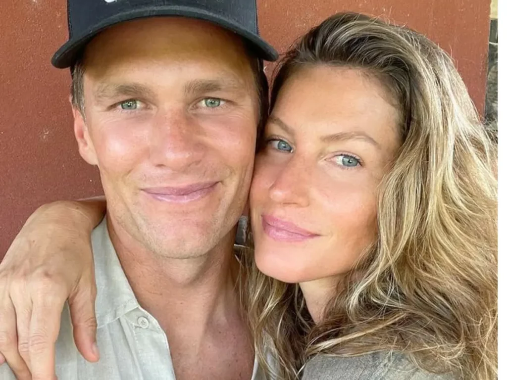

Gisele Bündchen é uma supermodelo brasileira que alcançou fama mundial ao longo de sua carreira. Ela nasceu em Horizontina, Rio Grande do Sul, e foi descoberta por um olheiro de modelos aos 14 anos de idade. Gisele logo se tornou uma das modelos mais reconhecidas e bem pagas do mundo, trabalhando com marcas de renome internacional.
Além de sua carreira na moda, Gisele é conhecida por seu ativismo ambiental e filantropia. Ela é embaixadora da Boa Vontade do Programa das Nações Unidas para o Meio Ambiente e está envolvida em diversas causas sociais.
Em sua vida pessoal, Gisele é casada com o jogador de futebol americano Tom Brady, com quem tem dois filhos. Sua influência vai além da moda, e ela é admirada por sua postura sustentável e estilo de vida saudável.

Gisele Bündchen é uma figura icônica não apenas na moda, mas também como defensora do meio ambiente e do bem-estar. Sua jornada inspiradora a tornou uma das personalidades mais influentes do mundo da moda e além.